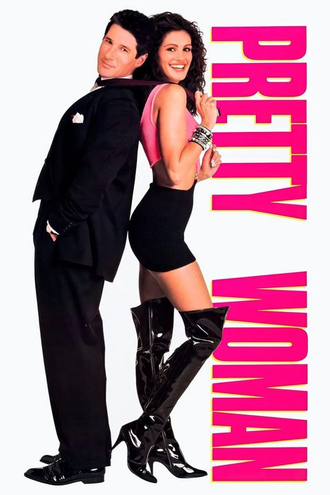
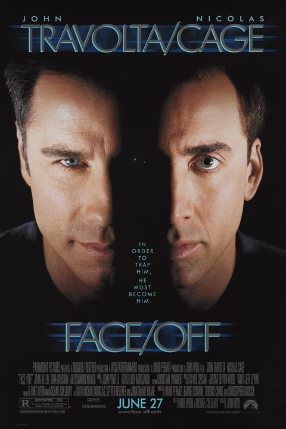
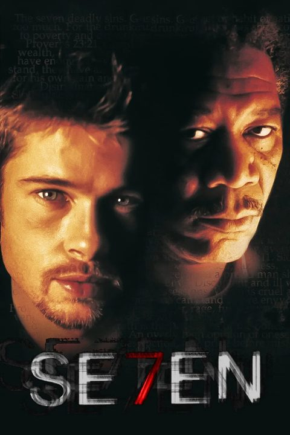
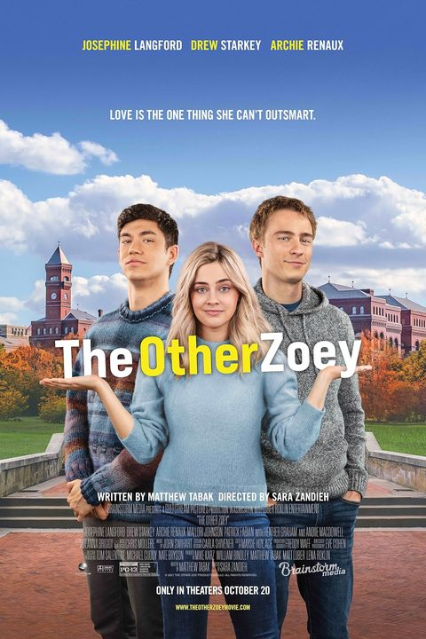
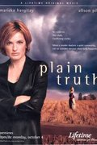
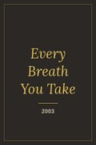
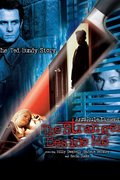
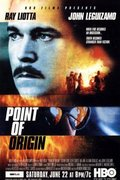
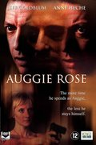
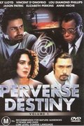

Developed · Disney
Pretty Woman
Developed the script 3000, which became Pretty Woman, and coached Julia Roberts on her audition.
Script consultant Script notes Career advice
I won't just tell you “what's wrong” with your script, I will offer concrete solutions on how to fix it. It's what I've been doing for thirty years. Plus, I'm a writer, so I “get it.”
$1 billion+in box office and home video from films Matt developed or wrote

When Hollywood needs a script doctor, they call the billion-dollar box office surgeon.Now Matt makes house calls… over Zoom.
Billion-dollar figure: combined worldwide box office, home video (VHS, DVD and Blu-ray), TV licensing and streaming revenue from films Matt developed or wrote.
The experience

Developed · Disney
Developed the script 3000, which became Pretty Woman, and coached Julia Roberts on her audition.

Bought & developed
Bought the screenplay when every other studio had passed and developed the project.

Discovered the writer
Discovered Andrew Kevin Walker and gave him his first screenwriting job.

Wrote & produced · 2023
Recently wrote and produced The Other Zoey for Amazon, a number one rom-com hit. Source for chart claim
Matt hired and worked with hundreds of writers and directors, including…
DirectorWriter
…and many others.

2004Plain TruthTeleplay
2003Every Breath You TakeWriter, director
2003The Stranger Beside Me WGA Award nomineeTeleplay
2002Point of OriginWriter
2000Auggie Rose (Beyond Suspicion)Writer, director
1994The InvestigatorWriter, directorThe who
Writer, director and producer. Former studio executive. Wall Street bulldog.
He's been a part of the studio system, the indie world, and the streaming universe. Now for the first time he is offering his services to the public.
*Worldwide theatrical box office for Pretty Woman ($463.4M) and Face/Off ($245.7M), per Box Office Mojo, plus home video and The Other Zoey. Home video figures and source to be verified
Worked for Touchstone/Disney, Paramount, Warner Bros. and Jerry Bruckheimer. Developed over 150 projects. Read over 2,000 scripts.
As a studio executive, gave such good notes on a project that Jeffrey Katzenberg wanted him to rewrite the script.
Has written over 25 screenplays and pilots, in all genres from rom-coms to psychological thrillers to historical epics and biopics.
Adapted Dostoyevsky's The Brothers Karamazov for Francis Coppola and Sony Pictures.
A former New York deal lawyer who spent years across the table from people who read every clause twice. Now he reads them for you.
Has advised numerous writers, directors and producers on deal making, contracts and strategy.
Teaching. Teaches at Chapman University's Dodge College of Film and Media Arts. Taught screenwriting at the University of San Francisco and has given pitching seminars across the country.
Matt lives in Hollywood with his teenage son, who learned at the age of two that for a story to be effective it needs conflict.
If you want script notes, help with production issues, or assistance with legal, financial or career concerns, you have come to the right place. Full background and credits
The what
I can help.
The nitty gritty
Every service includes a live conversation by Zoom or phone.
Feature film
Most requested$600
Comprehensive reading of your draft, plus a phone call or Zoom where we will discuss your project.
Over 120 pages? Contact me for a quote.
Get feature notesTelevision
$400
Comprehensive reading of your draft, plus a phone call or Zoom where we will discuss your project.
Over 65 pages? Contact me for a quote.
Get pilot notesBefore you write
$350
Comprehensive reading of your treatment, plus a phone call or Zoom where we will discuss your project.
Over 10 pages? Contact me for a quote.
Get treatment notesQuick hit
$175
Send me your logline and in a 30-minute phone call or Zoom I will assess its viability and give suggestions.
Punch up my loglineThe business side
$195first hour
Help with a contract, a question about a producer's offer, or the financial and legal intricacies of the business. $125 each additional hour.
Get career adviceHandwritten notes are not a part of these services. For longer scripts, pilots or treatments, please contact me for a quote.
The fine print, up front
Matt knows a lot of people in this business. That's not what you're paying for. This is about story, character and craft: telling compelling stories, and growing into a stronger storyteller.
Matt does not promise, arrange or even hint at introductions to agents, managers, producers or talent.
Here's the good news: if the writing is truly solid and compelling, it gets noticed. Matt isn't the vehicle for that. He's not a manager or an agent. He's the person who helps make the writing that good.
The stakes
I'll be straight with you. This isn't cheap, and it isn't for everyone. That's on purpose.
I only work with dedicated storytellers. Not dreamers.
First screenplay? Keep your money. Join a writers group, read produced scripts, and finish a few more drafts. You'll learn more from that than from any consultant, including me.
Put in the years? This is for you, ideally with something to show for it, like a semifinalist or finalist placement in a major competition.
Know the odds. Screenwriting looks easy but is brutally hard. The odds are longer than most people imagine. The ones who make it are the ones who will stop at nothing.
Put another way: fewer Guild writers got paid to write a movie that year than there are players on NFL and NBA rosters. And screenwriting's most prestigious fellowship is about as selective as NASA's astronaut corps. Sources: WGA West annual report (2023 screen earnings); 53-player NFL and 15-player NBA rosters; NASA 2025 astronaut class; Academy Nicholl Fellowships.
Great writing can't be taught. It has to be learned… nurtured, one draft at a time. What I can do is shorten the distance. But the distance is eternal. We can always strive to become better writers.
FADE IN:
Tell me about the project in a few lines. Please don't send pages yet.
5 minutes
CUT TO:
If it's a fit, you accept the submission release, pay, and only then send your material.
1-day reply
INT. OFFICE
Every page, personally. No readers, no assistants.
X business days
FADE OUT.
An in-depth session by Zoom or phone. Record it, ask anything, and leave with a plan.
30 min – 4 hrs
Client testimonial Ideally a concrete result: a fellowship placement, a rep signed, a sale, a staffing job.
Client testimonial Ideally a concrete result: a fellowship placement, a rep signed, a sale, a staffing job.
The idea
One sentence decides whether your script gets opened. How long it should be, what goes in it, and what to leave out.
Treatments & outlines
Length, tone and what to leave out, from someone who read hundreds of them at the studios.
Structure
How Face/Off and Pretty Woman actually break down, and why structure is a diagnosis, not a formula.
Straight answers to what writers ask most, from the craft to the contract.
Don't see your question?
Ask Matt directlyThat's exactly what screenplay and TV pilot notes are for: a comprehensive reading of your draft, then a two-to-four-hour call with detailed analysis, ideas, and concrete solutions on how to fix it. See screenplay notes and rates.
Friends are kind and strangers online are guessing. Matt read over 2,000 scripts as a studio executive and knows what makes a buyer say yes, and as a working writer he knows how to get the fix onto the page. See screenplay notes and rates.
Start with a logline and idea punch-up: a 30-minute call where Matt assesses the idea's viability and gives suggestions. If you already have a treatment, treatment analysis goes deeper before you commit months to a draft. See rates.
Yes. As a former Wall Street transactional attorney, Matt has advised numerous writers, directors and producers on deal making and contracts. Legal, financial, production and career help is $195 for the first hour. Scope and licensure statement
Book an hour of legal, financial, production and career help. You'll get a former studio executive's read on what the offer means, what's standard, and what to push on. $195 for the first hour, $125 for each additional hour.
Matt has seen the business from the studio, the writer's chair and the deal table. An hour of career help covers options, financing, packaging, representation and how deals actually get made. See rates.
No. Matt has plenty of industry relationships, but this service isn't about access. It's about story, character and craft. He doesn't pass scripts along, make introductions or promise representation, a sale or a meeting. Truly solid, compelling writing gets noticed on its own merits; Matt isn't a manager or an agent, and he isn't the vehicle for that. What you get is a better script, and a better storyteller.
No. Handwritten notes are not a part of these services. The core of every service is the live call, where we can dig into your questions in real time.
Feature reads are typically X business days from payment. Rush service is available for price.
Please don't. Start with a short inquiry. If we're a fit, you'll accept the submission release and book the service, and then you send your material. It protects both of us.
Yes. I don't share or pitch your material to anyone without your written permission, and you keep all rights to it. The terms are set out in the submission release you accept before sending pages.
Scope and licensure statement To be confirmed with Matt before publishing.
The contact
For more info and to get started, please contact me. Tell me a little about your project and I'll reply within one business day about fit and timing. Please don't attach or paste script pages here; those come after you've accepted the submission release.
Or email matt@screenwritingconsultant.com set up address